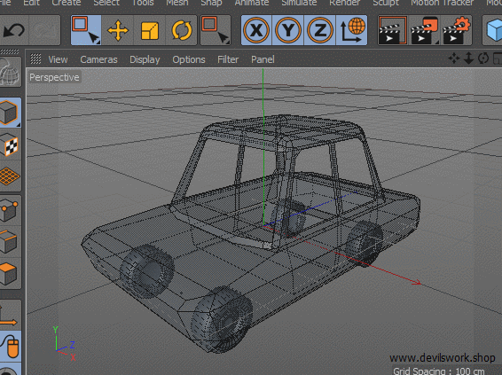

3D models can be divided into two categories.
Solid and shell modeling can create functionally identical objects. Differences between them are mostly variations in the way they are created and edited and conventions of use in various fields and differences in types of approximations between the model and reality..
This also shows a lot of representation because it allows you to make your 3D Model do a really cool action. Look for more details in the Technology section.
